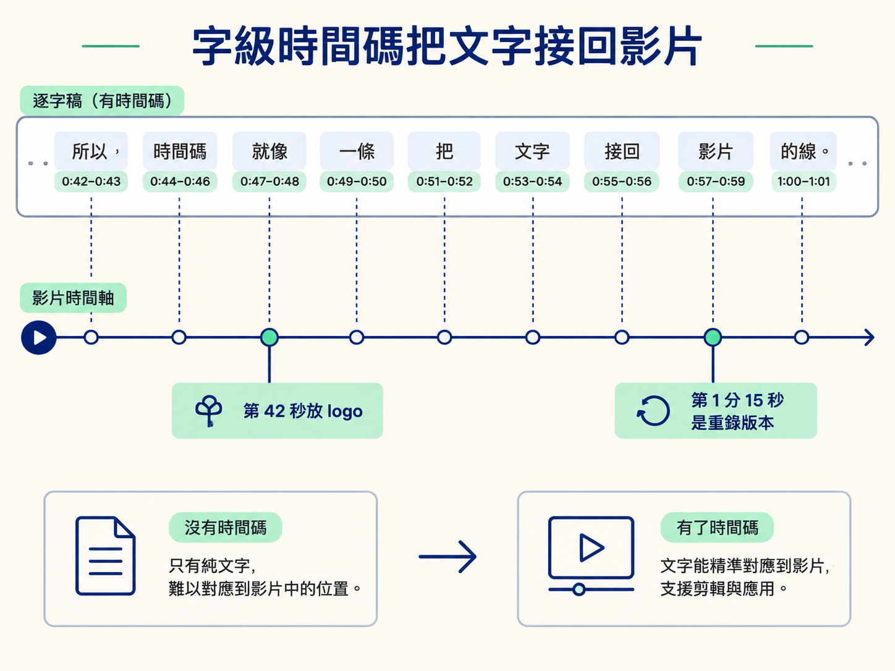
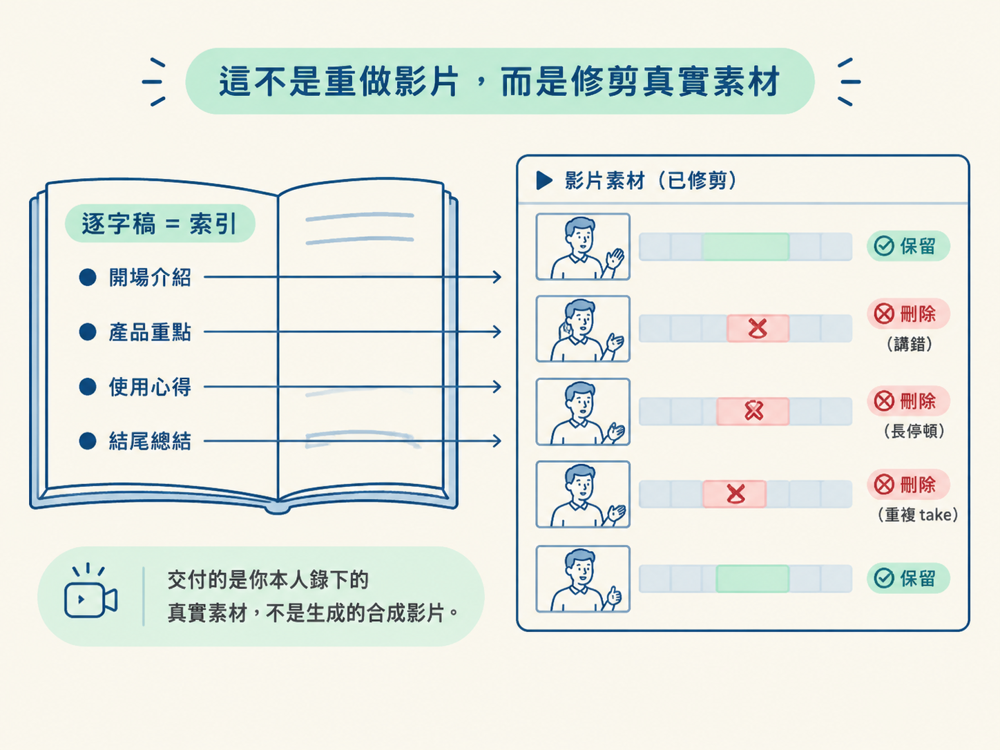
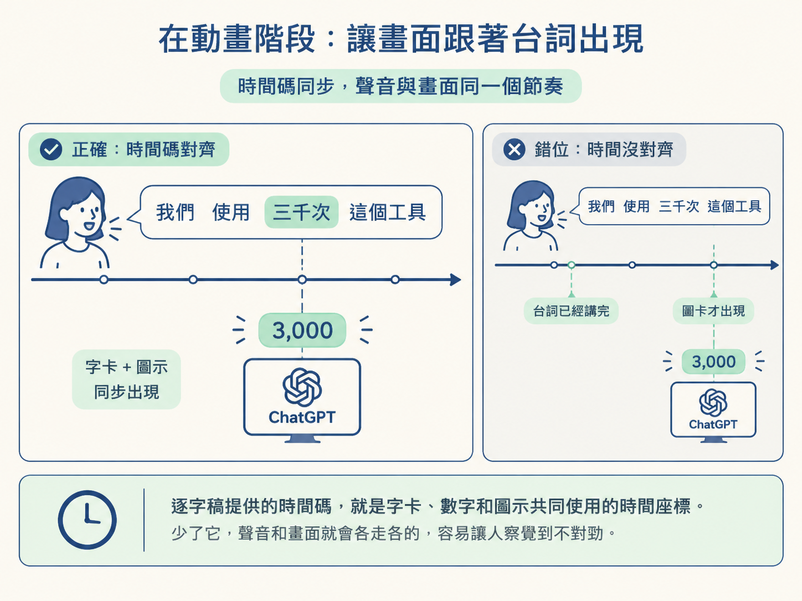

想像一下，你剛錄完一段十五分鐘的螢幕教學。裡面可能有講錯後重來的片段、幾個尷尬的長停頓，也有一句你特別想留下的金句。現在，你想把這段素材交給 agent 剪輯。
問題很快就會出現：agent 沒辦法像人一樣直接聽影片、看表情，再判斷哪一句講錯、哪一段值得保留。那它要怎麼知道該留下什麼、刪掉什麼？
這就是為什麼這條產線要從轉錄開始。對一段以說話為主的素材來說，影片的核心其實是「被講出來的話」。畫面、簡報和游標移動固然重要，但它們多半是在支撐內容。agent 要先理解你說了什麼，才有機會進一步判斷影片該怎麼剪。
因此，在整條 pipeline 裡，轉錄是把影片送進 agent 理解範圍的第一座橋：它把聲音整理成文字，再把文字接回影片中的實際時間。
學完這一節，你應該能說明為什麼 agent 剪片時，第一步通常是轉錄，也能理解逐字稿中的時間碼在剪輯與動畫裡的作用。
可以把逐字稿想成 agent 的耳朵。人理解訪談或教學時，會靠聽覺掌握內容；agent 則需要先閱讀逐字稿，才知道你說過哪些句子、哪些意思重複，以及哪一句話講到一半後又重新說了一次。
有了這層理解，agent 才有可能判斷：「這一段值得留下」，或是「這一段只是多餘的重複」。不過，只有一大段文字還不夠。那樣的逐字稿比較像一份沒有頁碼的文章：內容在，但很難立刻找到它在影片裡的位置。
真正讓 agent 能夠動刀的，是逐字稿裡的字級時間碼（word-level timestamp）。每一個字，或每一小段詞，都會標示它在影片中的開始與結束時間。如此一來，agent 才能把文字和影片中的具體位置連起來，例如：
反過來說，如果只有一大段沒有時間碼的文字，agent 雖然知道你說了什麼，卻不知道那句話發生在影片的哪一秒。它無法把文字準確地對回畫面，也就無法可靠地決定該刪掉哪一段。
所以，時間碼就像一條把「文字」接回「影片」的線。沒有這條線，逐字稿只能幫助理解；有了這條線，它才真正能支援剪輯。

這裡有一個容易混淆的地方：這條產線不是叫生成式影片模型重新做一支新影片，而是拿文字當成索引，去修剪你原本錄下的真實素材。
逐字稿就像一本書的目錄，讓 agent 找得到每一句話位在影片的哪個位置。agent 依照這份目錄刪掉不要的段落、留下需要的段落；畫面本身仍然是你親手錄下來的那一份。
換句話說，最後交付的不是一支「看起來像你」的合成影片，而是你本人，只是把說錯、停頓和多餘片段整理乾淨了。

也因此，逐字稿必須可信。如果它把某個字聽錯，或把某個時間點標偏，agent 就會依照錯誤的索引下刀。結果可能是刪掉原本很好的句子，也可能留下講到一半的半句話。
轉錄表面上像是剪輯前的準備工作，實際上卻是整條產線的地基。地基歪了，後面的剪輯和動畫即使做得再快，也很難對準原始素材。
逐字稿的價值不只在於讓 agent 讀懂內容。其中的時間碼會一路傳到後面的工作，至少同時支援剪輯和動畫兩個方向。
帶有時間碼的文字，能幫助 agent 找出停頓、咳嗽、NG 重錄，以及同一句話被講了兩三次的情況。接著，agent 才能依照剪輯規則判斷要保留哪一版。
下一節之後會看到「最後一版優先」這條規則。它之所以能執行，是因為時間碼能指出每一次 take 的開始與結束位置。沒有位置，就沒有辦法精準地把不同版本分開。
動態圖像也必須對準你正在說的內容。你講到某個數字時，畫面可以在那個時刻跳出數字；你提到某個工具時，logo 也應該在相對應的時間浮現。
逐字稿提供的時間碼，就是字卡、數字和圖示共同使用的時間座標。少了它，聲音和畫面就會各走各的：台詞已經講完，圖卡才姍姍來遲；或是圖示先出現，卻還沒講到對應的工具。這種錯位就像電影配音沒有對準嘴型，看的人很快就會察覺。

對有說話的素材來說，逐字稿同時是 agent 的耳朵，也是整條產線的時間軸。它透過字級時間碼指出每一句話落在影片的哪一秒，讓 agent 能判斷哪些段落該剪，也讓後續的動態圖像能對準台詞出現。它不是可有可無的副產品，而是剪輯與動畫能否精準運作的共同前提。
現在可以把這個觀念掛回整條 pipeline：轉錄先讓 agent 理解內容，時間碼再把這份理解接回真實影片。接下來的問題，就是要用哪個工具把這份逐字稿可靠地產生出來。
下一節會從速度、成本和隱私三個角度，比較 AssemblyAI、Whisper 與 ElevenLabs Scribe，並說明 API key 應該放在什麼安全的位置。